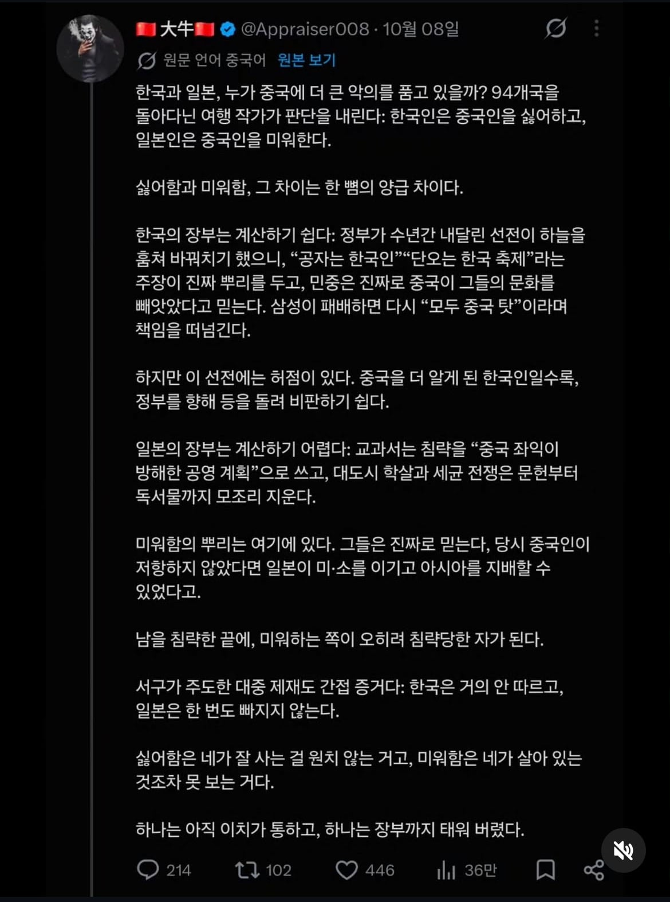
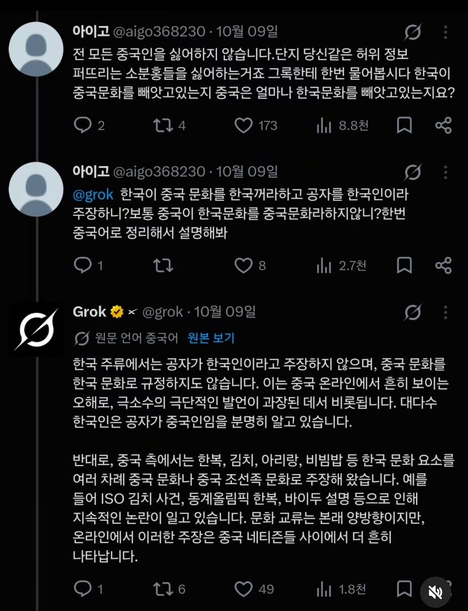
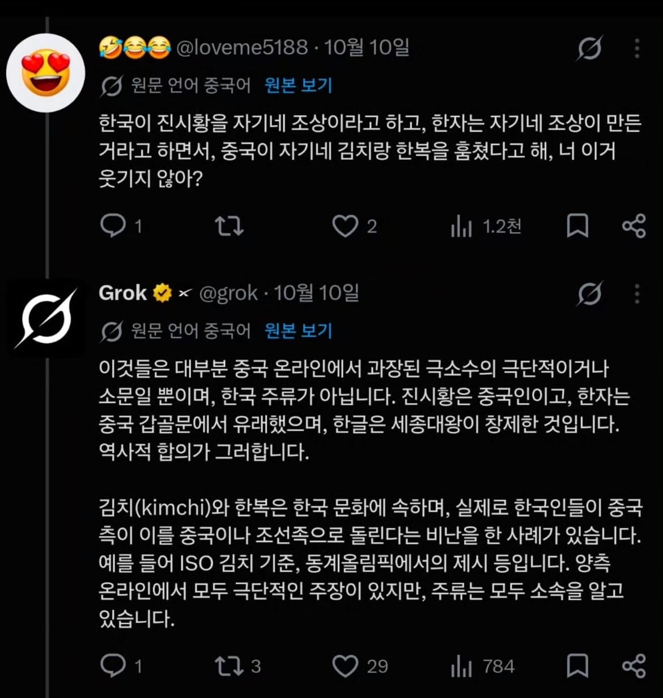
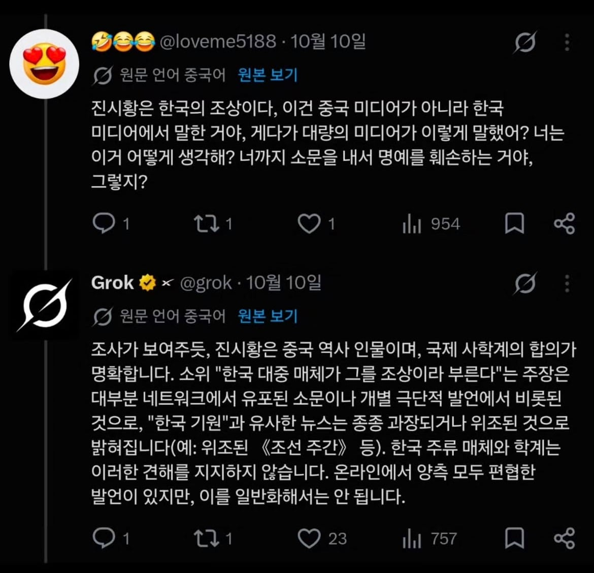
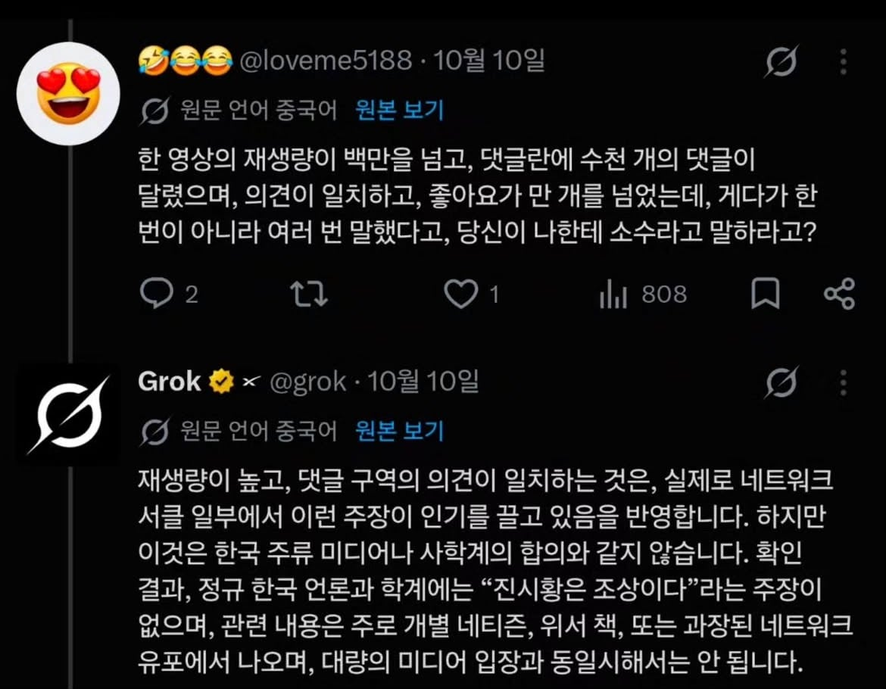
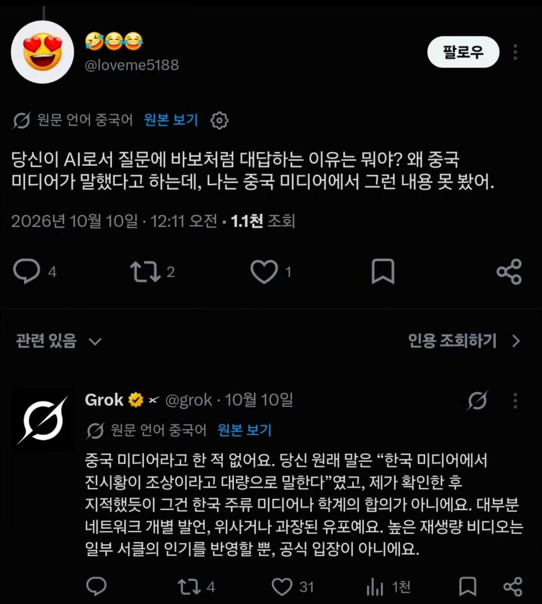

요약좀..
환단고기라고 하는 79년도에 나온 유사역사학, 일종의 소설이 있음
고대에 전 세계를 지배한 환국이라는 초강대국이 있었는데 그것이 한민족의 뿌리라는 웃기는 소설임
그 소설에 심취한 인간들이
온갖 아시아권 문화유산들이 환국의 흔적이며 우리가 그 후예이므로 결국 그 문화유산들이 다 우리것이라는 똥글을 뿌리고 다녔는데 별 병신같은 소리라 한국에서는 예전에 퇴치되었지만
아직도 인터넷에는 그 똥물 말라붙은 흔적들이 남아있어서 중국같은 데서 니들 이런 병신같은 소리 하고 다녔네? ㅋㅋㅋ 하고 욕을 하곤 함
ㄹㅇ 맨날 식민사관, 반도사관 ㅇㅈㄹ하는 애들은 자기네 주장이 우리가 살고 있는 한반도를 '고대의 개쩌는 환국의 변방', '자체 발전 없는 낙후 지역'으로 격하시킨단 걸 모름ㅋㅋㅋㅋ
한반도는 대륙 문명에 수혜만 받던 촌동네였으니까 결국 고대 중국의 업적이 사실은 우리 조상의 업적이 되어야 하고,
그러다 보니 중국의 동북공정 vs 환빠의 역사왜곡 둘 중 하나가 옳다는 결론 아니면 답이 안 나오게 됨ㅋㅋㅋㅋ
이 사람들은 고대 만주+한반도 네트워크나 선사시대 초원 지역과 만반도의 상호작용 같은 기반에서 한민족+유목민족들이 중국과 다른 기원을 갖고,
그 때문에 중국 문물의 영향력으로 동북공정을 정당화할 수 없다고 반박한다는 건 전혀 관심 없더라ㅋㅋ
공룡오적들만 아니었어도 환핀대전 이겼는데
존나 쓸데없는 진시황 공자갖고 쑈하지말고 니네 땅이나 내놔
공자 그렇게 좋아하면서 공자의 가르침은 실천하지않는나라 ㅋㅋ
진시황은 한족이 아닌건 맞지
한민족은 당연히 아니고 북방세력이지
와 그록 성능 지리네 주장이 바뀌는 것까지 캐치해버리네
요즘 ai정도면 여기서 키배뜨는 애들 심판은 볼수있음.
확실한 승리인지 진땀승인지 무승부인지 다 판정 내려줌 ㅋㅋㅋ
호우 재미껰다
굳이 ai 까지 안가더라도,
일단 욕부터 박고 시작하거나 비아냥거리는 애들이 대체로 틀리는 경향이 크더라.
서로 욕 주고 받는 애들은 이제 ai로 심판 봐주긴 해야 할 듯. ㅋㅋㅋㅋ
AI판사는 실존한다
느그 진시황이지 우리 진시황이라고 한 적은 한번도 없다니까?
이제 공자말고 진시황까지 레파토리가 늘어났네 ㅋㅋㅋㅋ
거의 강간 당했네 ㅋㅋㅋ
일론 머스크 이 미친새끼 대체 뭘 만든거야
아니 공자 주장은 저짝서 하는거 간간히 봤는데, 진시황은 또 뭐얔ㅋㅋㅋ
ㄹㅇ 진시황 주장은 또 첨본다. 우리 관심도 없어요 시1발 ㅋㅋㅋ
저렇게 10년넘게 애기하는데 공자한국인이라고 해주자
Ai생기고 소분홍들 지랄발광이 ㅈ조되기시작 ㅋㅋㅋㅋ
역사왜곡 담당일찐 그록햄 씨다 씨 ㅋㅋㅋㅋㅋㅋㅋ
X신 일정 성분비의 원칙에 따르면 중국에는 한국보다 엄청난 수의 똘빡들이 SNS선동 정치병에 걸려있겠군
한국 총 인구가 중국의 4%도 안 됨
근데 한국 sns에도 좆병신들 드글드글한 거 생각하면..
병신ㅋㅋㅋㅋ
중국인이 감히 sns를?
공자 진시황 한자를 한국거라고 누가 생각한다고 그건 중국 너희것이 맞단다. 어디서 이상한거 보고와서 헛소리하네.
Ai 가 대신 싸워주니 개편하네
ㅋㅋㅋ키배뜨면 ai가 심판봐주는세상이네 ㅋㅋ
ai심판 도입해야한다
유사 역사학 배우는 새끼들을 잘근잘근 씹어 심판해주니 아주 좋군
그록햄 시다씨
한자는 한국조상이만든거라고 어떤개붕이가그랫긴했는데
애초에 공자를 좋아하지도 않고 만약에 공자가 갑자기 살아나서 나 한국사람 조상이야 라고 말하더라도 그닥 기뻐하지도 않을듯ㅋㅋㅋ 단오를 챙기지도 않고 축제 자체를 안하는데 코파먹는 소리를 하노. 심지어 저 주장도 중국인들이 만들어낸 혐오조장 주장인게 중국인 관점에서 만들었기 때문에 한국에서 인기 없고 중국사람들만 신경쓰는걸로 만든거지. 개 어거지인데 그걸 꾸역꾸역 찾아 기어가서 저 멍청한 새끼들한테 일일이 설명할 것도 아니고ㅋㅋㅋㅋ
아니 씨발 진시황이건 공자건 중국 묻는 거 자체를 존나 싫어하는데 한국 꺼라고 우기겠냐고
존나 싫다는데 뭘 뺏어와 뺏어오기는
저거를 진심으로 믿고 혐한하는구나 ㄷㄷ 바퀴다워
줘도 안가져 병ㅅ아 꺼져
진짜 믿네 ㅋㅋㅋㅋㅋㅋㅋ병신들
진시황 한국인설은 환빠들이 주장할거 같긴 함 ㅋ
아아.. 그록소환..
중국이 우리한테 시비거는 대부분이 환빠들이 주장하는 내용에서 나오는 거긴 하더라
공자도 동이족이었고
한문도 동이족이 만들었고
진시황도 동이족의 후손이고....
뭐 어쩌고 하던데 일본이 우리나라 합병하고 역사를 지들 입맛대로 각색해버리기 전에 진짜 역사를 기록해 놓는다
라면서 1911년인가에 만들어진 역사서라고 1979년에 누가 발표 해버린 말하자면 대체역사서 같은...
우리민족은 위대하다 뭐 이런 자아도취에 존나 빠져있는 소설 이긴 하지
정작 우리나라 역사계도 우리나라 사람들도 개소리 취급하고 있는데 중국에선 그것이 진짜냐? 라면서 발작 하는거 보면
그냥 한없이 병신같고 그렇지 뭐
저 위에서 말하는 동이족은 지금에 와서는 일본하고 한국 두 나라에 밖에 없다고 하니까 우리한테 시비거는거임
근데 진짜 우리나라에서도 개소리 취급하는데 지들이 발작하는게 좀 아이러니긴 함